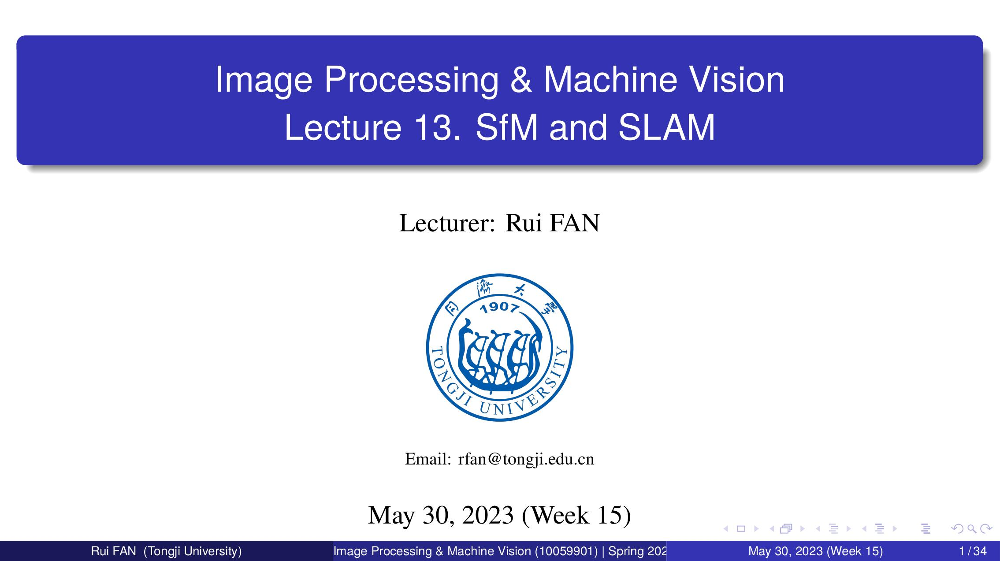

Image Processing & Machine Vision
(10059901)
Lecturer:
Rui Fan
Email: rfan@tongji.edu.cn
Teaching Support Assistants:
Chuangwei Liu & Jiahe Fan
Department of Control Science & Engineering
Tongji University
Demo Videos
Lecture 01. Introduction
Lecture 02. Human Visual Perception, Cameras, & Images
Lecture 03. Perspective Transformation
Lecture 04. Camera Calibration
Lecture 05. Epipolar Geometry (I)
Lecture 06. Epipolar Geometry (II)
Lecture 07. Image Filtering
Lecture 08. Image Pyramid
Lecture 09. Edges & Lines
Lecture 10. Interest Points
Lecture 11. Stereo Matching
Lecture 12. Motion
Lecture 13. SfM & SLAM

Lecture 14. IPMV with Deep Learning
Supplement 01. RANSAC